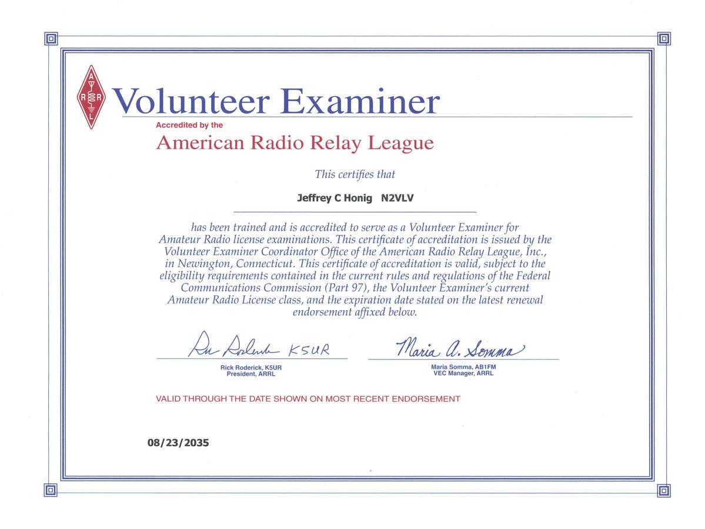

Interesting Ham Radio Projects
- Net Checkin - A page to record and save net callsign checkins with lookup on QRZ.com
- XC70-Antenna-Tuning — Installing and verifying a mobile antenna on my car
- VGC VR-N7500 — An app-controlled mobile radio
My Journey to Ham Radio ▼
When I was in Junior High School we visited a family friend who was an amateur radio operator. I was intrigued by his ham shack. He ended up giving me a Hallicrafters short wave receiver.
Back at school I would carry around the ARRL Handbook; back then it was on paper and the size of a major city phone book (if you are too young to know what that is, google it). In High School I joined the local Civil Defense with the idea of taking classes to study for my amateur radio license. However, the folks that ran Civil Defense were not ready to deal with exuberant teenagers and nothing came of it.
Then I got distracted by CB radio and communicated with friends that way until I went to college. At one point I tried mounting a 6' whip to my bicycle and powering a mobile CB with a battery pack. But there wasn't enough power in the NiCad packs of the day and it did not really work.
When I went to college I forgot about Ham Radio in general. After college, when I was working at the Clarkson University Computing Center I initiated a project to get business-band radios for the techs to carry around to stay in contact.
Now that I'm retired I figured I can spend the time to study for my license. I asked a neighbor friend who happens to be the president of the Tompkins County Amateur Radio Association for recommendations to study for the exam. He recommended finding online tests and keep taking them until I pass. I eventually ended up on hamstudy.org and their Android app and took a couple dozen Technician exams and several dozen General exams. Several weeks later I took the exams on August 2, 2025; I aced the Technician exam and passed the General exam with 30 of 35 correct. I was initially assigned a call sign of KE2GMJ.
On August 23, 2025 my vanity call sign came through. I'm now N2VLV (as in VoLVo).
While taking the Technician and General practice exams, I took a practice exam for Amateur Extra and did horribly. Over the next six weeks I kept studying and started passing, achieving as high as 48 on two practice exams. On September 20, 2025 I sat for the Amateur Extra exam and passed with 46 of 50 correct!
I submitted my open book exam to be an ARRL accredited Volunteer Examiner. Instead of taking 3–4 weeks, my paperwork arrived exactly a week later.
